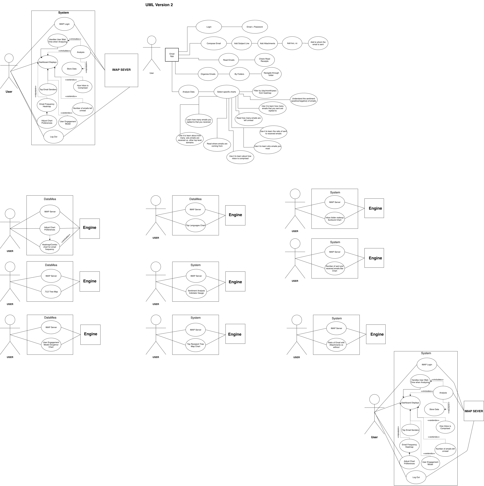
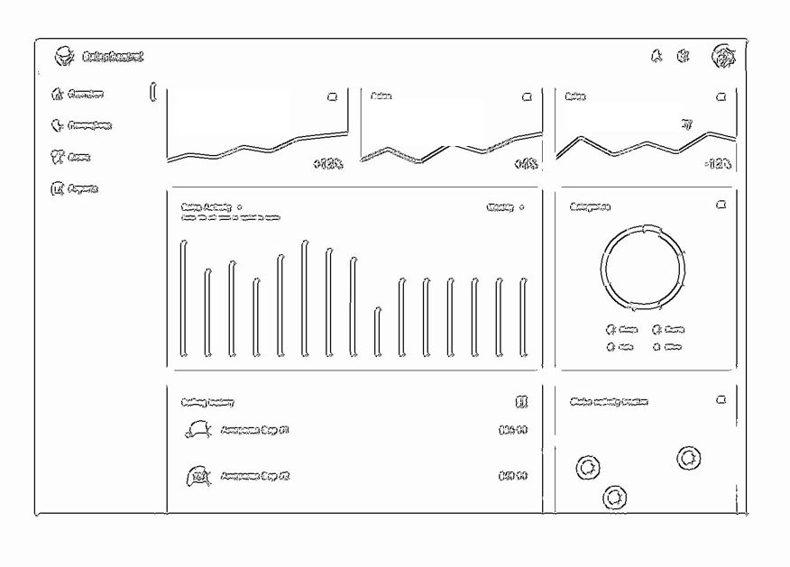
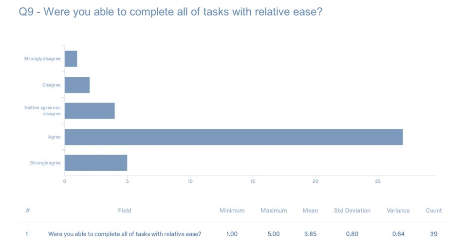
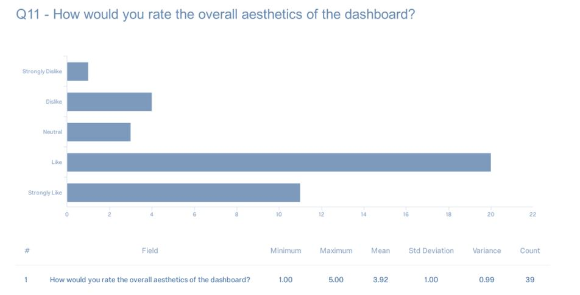

Overview
In efforts to provide a visualization of rea-time email traffic
DataMea was created. DataMea is a desktop analytics application developed at State University of NY at Oswego
as part of a software design course. DataMea analyzes the user’s Internet Message
Access Protocol (IMAP) data to display detailed, and sophisticated visualizations of email
activities.This application was developed using JavaFX.
Target User
The stakeholder who is a professor of computer science is the primary user. Due to the high volume of emails professors receive per day, it was decided that the would be the primary users of this desktop application.
Research
Market research: Before getting into the technical or design aspect of the application, market research was
conducted to see if the dasboard qualities we wish to create already exists and if so
how can we take user feedback they received and apply it to DataMea. Unfortunatly, very little
existed that was publicly available.
Role
Sketch, wireframes, usablity testing, QA testing
Personas
The real value of a user persona is to list down the goals/motivation of the users who will be using the application. Understanding the users, their motivations, their requirements helps in building user-centric products. Creating user personas helps you keep your whole team aligned with the design process. Personas are the go-to documents which ensure that every design decision is aligned with the intended user. total of 5 were created

Use Cases
Use case diagram lists out every use case of the software and shows how they related to each
With actors, we can know how to develop the function and how to control the different function
between actors
After a user has installed DataMea on their compatible computer, the user shall start the program.
Then DataMea will verify the user's login information with their respective credentials.
Thereafter, DataMea will open a separate window displaying a tutorial on the software and a
progress bar. Once the DataMea engine's analysis is completed, the user shall interact with
the interface by clicking on different portions of the GUI. The user shall exit the program by
clicking EXIT in which DataMea will close out, delete, encrypt, or overwrite any necessary information
stored on the read/write files.

Sketch
Rapid sketch of the layout of the DataMea 
User Testing
To ensure the test was realistic, we opted to use a real build of the application.
However, this revealed how functionally unstable the app was at the development stages.
Between the times spent recovering from bugs and app crashes we were able to find usability issues
related to perceived affordances, layout and search which we latter solved before the release.
To ensure that the application usabity goals were met. Users were asked to complete a survey via Qualtrics


Outcome
The Application is ready to use! Users can now Download.
be installed on Mac OS X (version 10.7.3 or greater), Windows (Windows 7 SP1 and newer), and Linux (Ubuntu 10.4 and greater,
and gtk2 2.18 and greater)